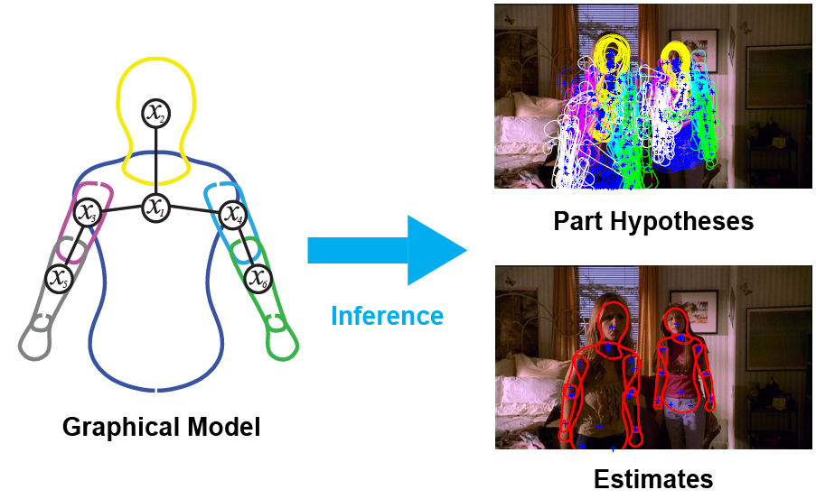

Advanced Topics in Probabilistic Graphical Models
CSC 655-1 | Fall 2019 | MW 11am-12:15pm GS 942


Description of Course
This seminar course will expand on the concepts introduced in CSC 535. The primary aim of this course is to provide students an introduction to advanced techniques in probabilistic graphical models (PGMs) and statistical machine learning (ML) and the ability to apply those techniques to their own research. In particular, students will learn to perform statistical inference and reasoning in statistical models where standard techniques are computationally prohibitive. The course will survey state-of-the-art ML research including: exponential families, variational inference, advanced Markov chain Monte Carlo sampling, Bayesian nonparametrics, Bayesian optimization, and Bayesian Deep Learning. Upon conclusion of this course students will be capable of developing new methods and advancing the state-of-the-art in ML and PGM research.
Course Prerequisites or Co-requisites
To successfully complete this course, students should have the following skills:
- Understanding of probability: distributions, marginalization, Bayes’ rule
- Familiarity with probabilistic graphical models: Markov random fields, factor graphs, Bayes nets
- At least an undergraduate level understanding of linear algebra, calculus, and some familiarity with concepts in nonlinear and discrete optimization
- Advanced programming (to complete term project)
Instructor and Contact Information:
Instructor: Jason Pacheco, GS 724, Email: pachecoj@cs.arizona.edu Office Hours: Tuesday, 10:00-11:30am Course Homepage: http://www.pachecoj.com/courses/csc665-1 D2L: https://d2l.arizona.edu/d2l/home/814136 Instructor Homepage: http://www.pachecoj.com